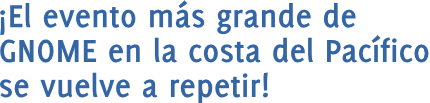

¡Día GNOME en Chile! ¡2009!
Siguiendo la filosofía del proyecto, el Día GNOME es un espacio libre, horizontal y accesible para conocer a otros entusiastas y desarrolladores, compartir ideas, quejas, proyectos, todo en un ambiente de amistad y buena onda.
En esta ocasión, y gracias al apoyo de la Fundación GNOME y el Décimo Encuentro Linux, nos acompañarán expositores de Perú y Finlandia quienes compartirán con nosotros sus experiencias y anécdotas.
El evento se llevará a cabo el día sábado 24 de octubre de 2009 en la Universidad Técnica Federico Santa María, en la ciudad de Valparaíso, Chile. Enmarcado dentro del Décimo Encuentro Linux a realizarse desde el jueves 22 al sábado 24 de octubre en dicha ciudad.
¡Participa!
La inscripción no tiene costo, solamente debes inscribirte en esta página la cual nos ayudará a programarnos de mejor forma.
El salón donde se realizará el evento tiene una capacidad máxima de 300 personas y tendrán preferencia las personas inscritas.
- ¿Asistiras al evento? ¡Inscríbete!
- ¡Subscríbete a la lista de correo de GNOME Chile!
- Visita la página de GNOME Chile
- ¡Únete al grupo de Facebook!
Cómo llegar
El Día GNOME se realizara en el Salón T de la UTFSM, puedes ver un mapa más detallado de la ubicación del auditorio dentro de la universidad.
Ver Día GNOME en un mapa más grande

{kind=link}